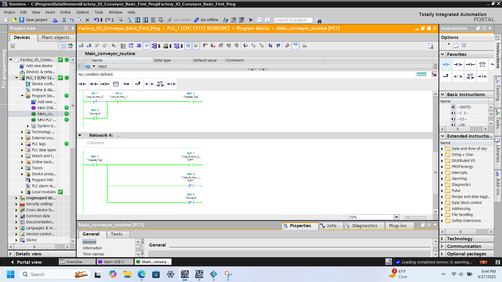

Tutorial TIA PORTAL
PASSO 1 Instalar
1. Após instalar o TIA Portal, clique no ícone do software para abri-lo.

PASSO 2 Aguarde
1.1 Aguarde o TIA Portal carregar completamente. Este processo pode levar alguns segundos dependendo da configuração do seu computador.
PASSO 3 Criar Novo Projeto
2. Ao abrir o TIA Portal, clique em "Criar novo projeto" ou "Abrir projeto existente".
PASSO 4 Adicionar Dispositivo
3. Clique em "Adicionar novo dispositivo" e selecione o modelo do seu CLP: SIMATIC S7-1200 → CPU 1214C.
PASSO 5 Configurar Hardware
4. Na janela de configuração de hardware, você pode adicionar módulos de entrada/saída e configurar os parâmetros do CLP.
PASSO 6 Programar e Baixar
5. Após configurar o hardware, escreva seu programa em Ladder, FBD ou SCL. Em seguida, clique em "Baixar para o dispositivo".